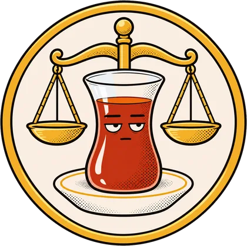

> youtube · türkçe · yapay zekâ ve ajanlar
Demli.
yapay zekâ, iyice demlenmiş
Yeni modellere aynı görevi veriyoruz, tek atışta. Abartı yok; sonucu çay bardağıyla ölçüp sakin bir hüküm veriyoruz.

> demli testi · 01
Üç görev. Beş model. Tek atış.
Aynı prompt kelimesi kelimesine verilir; ikinci şans yok. Puanı çay ölçer gösterir: bardak ne kadar doluysa o kadar demlenmiş.
İlk demleme 27 Kasım 2026, 16:00
Bardaklar boş: test henüz demlenmedi. Sonuçlar 27 Kasım'da buraya dolacak.
- Aynı promptKelimesi kelimesine, ek ipucu yok.
- Tek atışİlk teslim edilen dosya puanlanır.
- Dürüst kayıtSüre, deneme ve maliyet adisyona yazılır. Ham çıktılar demli-arena'da.